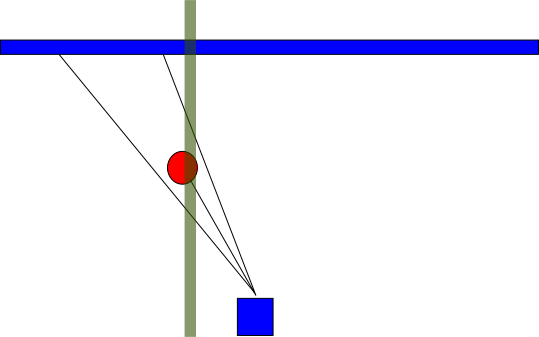

<!DOCTYPE html>
<html>
<head>
<style>

	html {
		margin 0; padding 0;
		background-color: black;
		color: #eee;
		font-family: sans-serif;
	}

	body {
		margin: 1em; padding: 1em;
		background-color: #333;
		font-size: 2em;
	}

	h1, h2, h3, h4, h5 {
		text-align: center;
	}

</style>
</head>
<body>

	<h1>Robot 9000</h1>

	<h2>Wandering Around</h2>

	<p>Initially, I divided the laser range scan into four equal arcs. I looped
	through the ranges and found the nearest point detected in each span and if
	that point was within a certain threshold ( range < 1.0 ) then I would mark
	that ark as being obstructed using a bitmask. Unfortunately, using four
	arcs caused complications. For example, givin the obstructions 1101 and 1011
	the robot would "get stuck" between swiviling left and right. Reducing the
	number of arcs to three, (left, center, and right) solved most of the
	problems.

	<p>The final dictionary of motions I sent to the robot were as follows:

	<p><pre>
	self.move = {
	   0: (math.sin(time.time()), fast),
	   1: (-medi, medi),
	  10: (fast*rdir(), stop),
	  11: (-fast, slow),
	 100: ( medi, medi),
	 101: ( stop, slow),
	 110: (-fast, stop),
	 111: (-fast, stop),
	"stop": (stop, stop)
	}</pre></p>

	<p>The first element in the tuple specifies the angular direction and the
	second specifies the forward/backward movement.

	<p>When their was no obstruction, the robot would follow a sinusoidal
	path to add an element of randomness. The rdir() function, which was invoked
	when an obstacle was detected dead ahead, provided a random direction
	continuously until a delay threshold was met, where upon it would select
	a new direction.


	<h2>Following a point</h2>

	<p>The solution that led our team to our massive victory was somewhat naive,
	but thoroughly effective. From the laser scan data I initially found the
	nearest point. Thereafter, I would using a growing window from the previous
	point until a new point was found nearby. The magic was that independent of
	range, the x position needed to be nearby as well.

	<p><pre>
    d1 = 100000
    a1 = 100000
    dx = 100000
    dy = 100000

    point_valid = 0

    for w in numpy.linspace(0.05,0.2,15):
        for i in range(len(scan_data.ranges)):
            if d1 > scan_data.ranges[i]:
                if prev_point is None:
                    d1 = scan_data.ranges[i]
                    a1 = a_list[i]
                    point_valid = 1
                else:
                    p = scan_data.ranges[i]
                    if abs((p * numpy.cos(a_list[i])) - prev_point.x) < w:
                        d1 = scan_data.ranges[i]
                        a1 = a_list[i]
                        point_valid = 1

        if point_valid:
            print "W", w
            break;

    if point_valid:

        point.x = d1 * numpy.cos(a1)
        point.y = d1 * numpy.sin(a1)
        pub.publish(point)
	</pre></p>

	<p>This resulted in very accurate tracking, as both the distance required to
	be minimized for a point to be followed, and as well the actual and absolute
	horizontal position needed to be self similar to the previous point. To
	reiterate, this implicitly tracked the distance as well, as the following
	diagram illustrates:</p>

	

	<p>From this point data, a simple PD controller node was used to attempt
	to keep the target point at 0.75m distance and central to the camera POV.


	</svg>

	<h2>Some trials</h2>
	<p>Idea: The way the original follower code doesn't work was beacuse the
	tracking point is easily distracted by whatever falls in that detection
	region. On the lab floor where all the chair legs and random goods around,
	the following wasn't very satisfying. Therefore I decided to work on a
	different approaches.</p>

  <p>Implementation: My approach was to do with vision. I decided to use
	camshif tracker at the first sight, because it caputres the histogram of the
	first scene robot "sees", and track its movement in the later
	frames. Detection only happens in the first sight, and later it tracks the
	movement of the firt detected contents. The tracking area was
	set according to the estimated height of an evading robot and the area it
	would appear on the screen. Also, in order not to collide or bump into
	other things, I added up a simple range detection using laserscan data. If
	anything falls within near 0.4 meters, robot will back up a little bit and
	turn the other way where object is. In any case, if robot loses track, it will
	automatically start searching around until it finds object again. This part
	was adapted from our wander bot.</p>

  <p>Results: For tracking large black and condensed black object, this
	algorithm works okay. But for a fast-moving object, this didn't give
	as well performances.</p>

  <p>Lesson learned: Maybe tracking algorithm works better for video analysis,
	but not real time implementation. In real time, each frame should go through
	an independent detection. </p>

</body>
</html>
